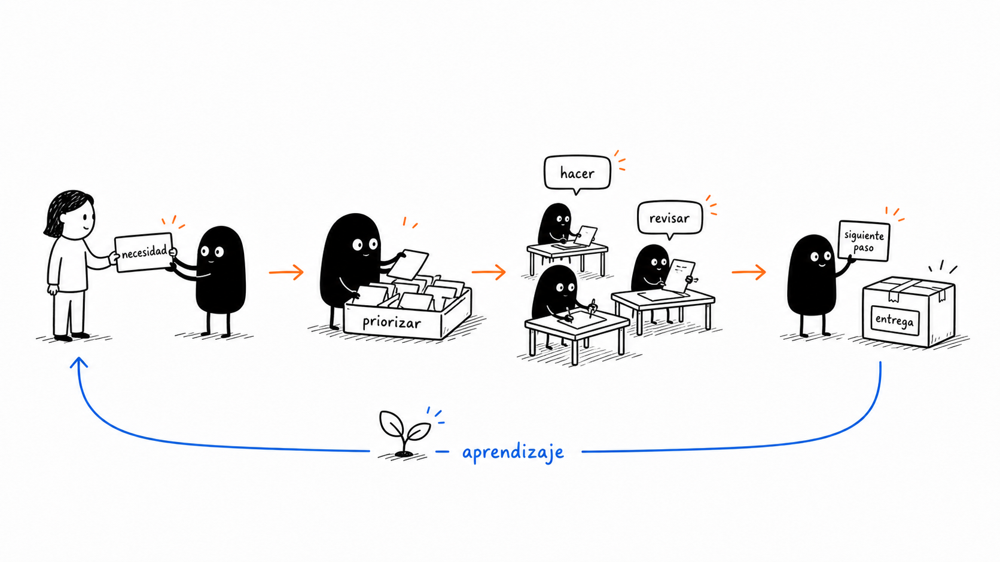
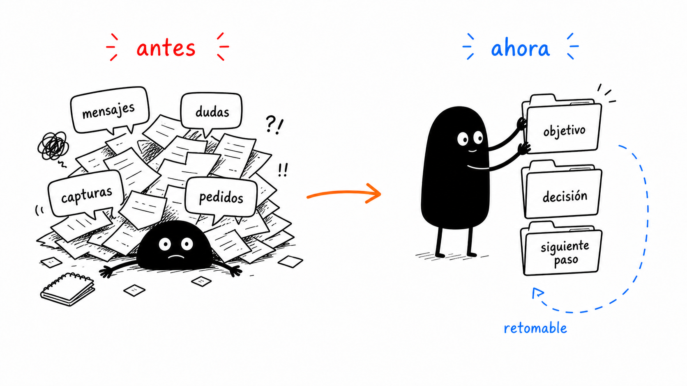
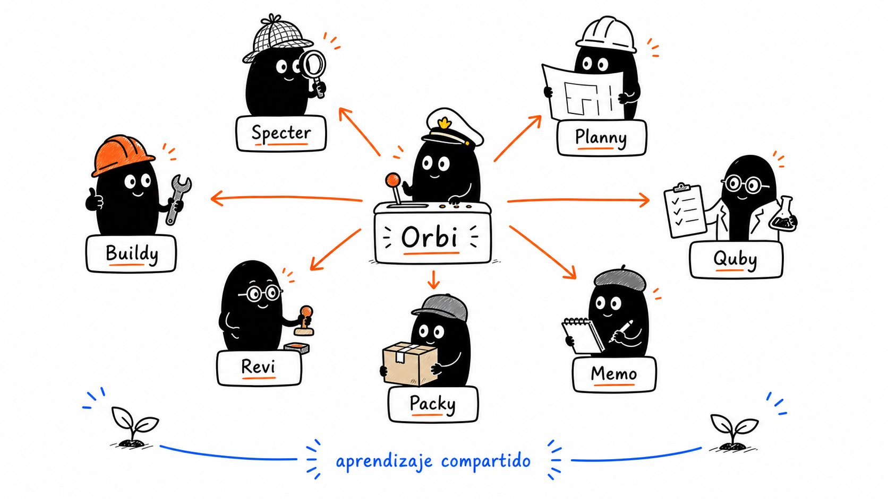
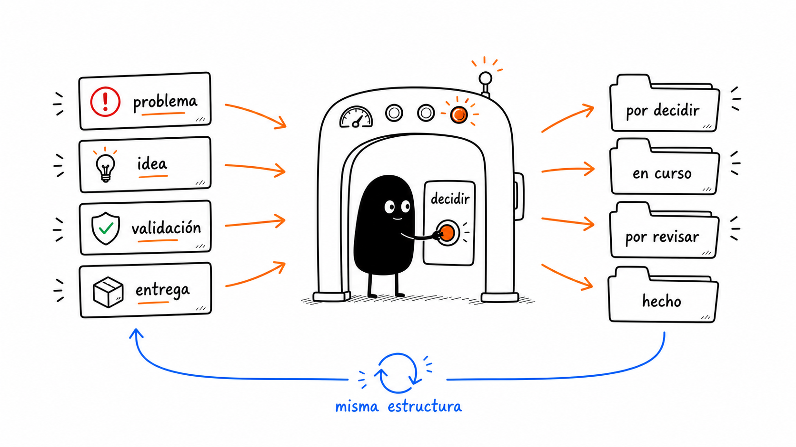
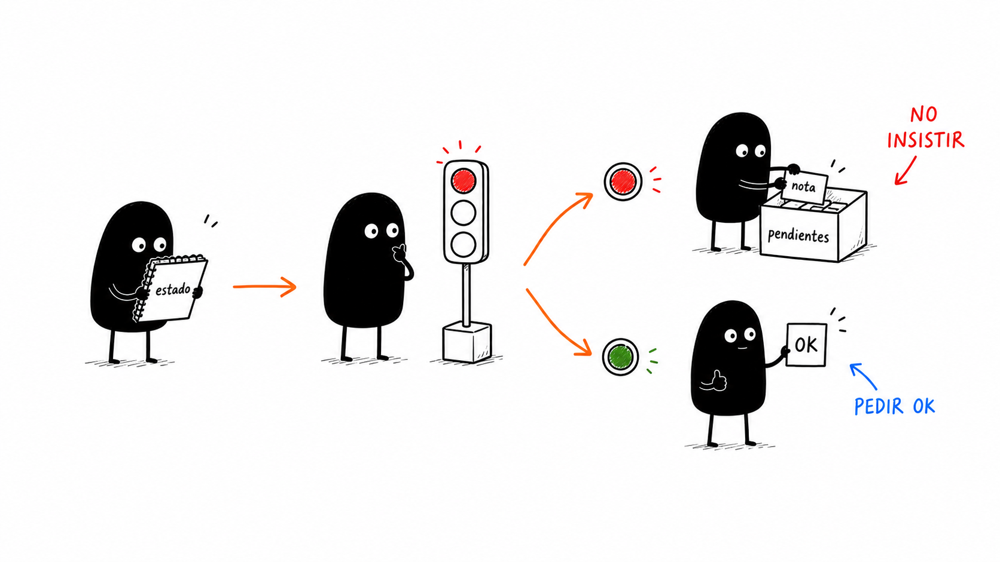
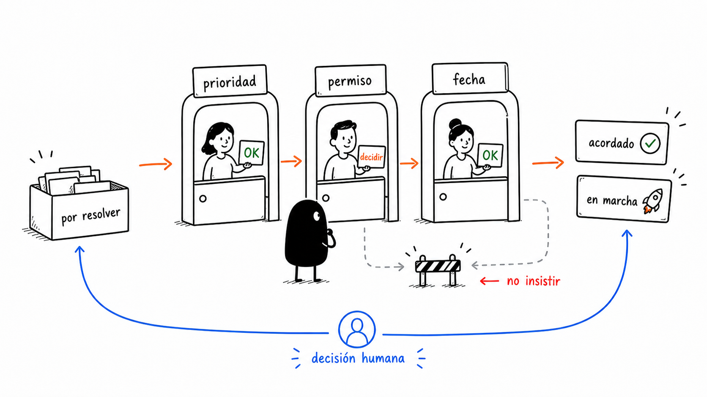
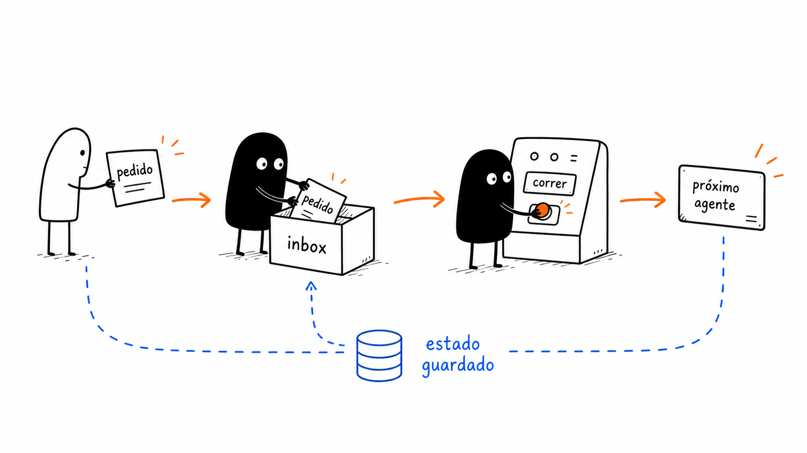

Llega un ticket, error productivo, pedido de análisis, validación QA o tarea de deploy.
Sky Inbox operativo
Un equipo de agentes para mover análisis, desarrollo y producción sin perder contexto.
Sky Agent OS toma una entrada del Sky Inbox, detecta si es ticket, error, validación o deploy, elige la skill correcta y deja el siguiente paso claro.
De Sky Inbox a producción
La primera capa es simple: entra un caso al Sky Inbox, se identifica el tipo de trabajo, se asigna una skill, se avanza con responsables claros y se frena cuando haga falta una decisión humana.

Orbi define qué tipo de caso es y qué skill conviene activar.
Specter separa evidencia de inferencia y deja claro qué falta confirmar.
Planny define repos, pasos, riesgos, validaciones y orden de ejecución.
Buildy implementa, debuggea o documenta sin pisar trabajo en curso.
Quby, Revi y Packy dejan MR, QA, documentación o paso a producción. detalle
Qué mejora del flujo anterior
Antes cada ticket, análisis o incidente podía quedar mezclado en conversación. Ahora entra por el Sky Inbox y queda ordenado, retomable y con una persona o agente responsable del próximo paso.

ANTES
Trabajo dependiente de la conversación
El contexto de Jira, repos, logs, QA, decisiones y próximos pasos quedaba mezclado entre mensajes.
Orden
Manual, recordado por una persona o por la conversación activa.
Bloqueos
Riesgo de repetir la misma prueba, el mismo push o la misma query sin nueva evidencia.
Revisión
Dependía de que alguien pidiera explícitamente revisión, QA, deploy o documentación.
AHORA
Trabajo gobernado por objetivo
Cada entrada queda convertida en objetivo claro, skill activa, responsables, validaciones y frenos visibles.
Orden
Orbi sabe si corresponde refinement, debugging, desarrollo, QA, deploy o doc.
Bloqueos
Máximo dos intentos por clase de error; al tercero se registra pendiente.
Revisión
La revisión queda como etapa natural, no como pedido tardío.
El equipo
Para que el flujo sea fácil de recordar, cada agente tiene nombre, accesorio y una misión. Orbi coordina; los demás resuelven una parte concreta del trabajo.

Lee el Sky Inbox, decide qué flujo sigue y frena si falta una decisión humana. detalle
Lee tickets, logs, repos y contexto para separar evidencia, inferencia y preguntas abiertas.
Arma el plan de repos, cambios, pruebas, riesgos, dependencias y orden de ejecución.
Implementa, debuggea, ajusta documentación o prepara scripts sin pisar trabajo en curso.
Corre checks, smoke tests, QA guiada o validaciones específicas del caso.
Revisa bugs, riesgos, arquitectura, cobertura y posibles regresiones antes del MR o deploy.
Prepara MR, resumen, release notes, doc de deploy o handoff para producción.
Guarda aprendizajes para que la próxima corrida empiece mejor. detalle
Escenarios del Sky Inbox
La entrada puede ser un ticket de Jira, un bug productivo, una validación QA, una preparación de deploy, una revisión de arquitectura o una mejora de documentación.

Error prod
Entra un síntoma, alerta, log o impacto de usuario. Specter arma evidencia antes de que Buildy toque código o ambiente.
- Qué pasó, dónde impacta y qué usuarios afecta.
- Qué dicen logs, dashboards, repos y despliegues recientes.
- Próxima acción clara: investigar, revertir, fixear, validar o escalar.
1
El caso queda clasificado: refinement, debugging, feature, QA, deploy o documentación.
2
Se activa la skill correcta y el equipo sabe quién sigue.
3
Repos, logs, comandos, tickets y decisiones quedan separados para no mezclar evidencia con suposición.
4
La salida queda lista como plan, cambio, MR, reporte QA, doc de deploy o handoff a producción.
5
El aprendizaje queda disponible para la próxima vez.
detalle
Entradas reales al Sky Inbox
Quien abre el caso puede hablar en lenguaje normal de producto o desarrollo: ticket, síntoma, repo, error, branch, validación, deploy o documentación.
Entrada
Casos que llegan al flujo
Jira
“Tomá este ticket, revisá criterios, repos afectados y dejalo listo para QA.”
Bug prod
“Hay errores en checkout, estos son los logs y el impacto. ¿Qué hacemos primero?”
Deploy
“Este cambio está mergeado; prepará changelog, validación y doc para pasarlo a producción.”
Salida
Lo que devuelve el sistema
Diagnóstico
Qué se sabe, qué se infiere, qué falta confirmar y cuál es el objetivo.
Plan técnico
Repos, archivos, comandos, pruebas y orden de avance dentro del flujo.
Entrega protegida
MR, reporte QA, release notes, doc de deploy o publicación final con OK explícito.
Qué cumple hoy
La versión actual ya ordena entradas del Sky Inbox, activa skills de trabajo, reparte responsabilidades, valida avances y deja decisiones humanas visibles antes de publicar o tocar sistemas externos.

Refinement y análisis
Cada ticket queda con objetivo, alcance, repos probables, riesgos y preguntas abiertas. detalle
Debugging productivo
Separa evidencia de inferencia, revisa logs, repos, cambios recientes y deja hipótesis accionables.
Desarrollo multi-repo
Planifica cambios coordinados, respeta ramas y trabajo en curso, y deja commits o MRs trazables.
QA y validación
Define casos, corre checks automatizables, guarda resultados y marca blockers de ambiente o datos.
Deploy y documentación
Prepara changelog, release notes, doc de deploy y publicación protegida con OK.
Memoria y skills
Errores repetidos se registran como pendientes accionables y aprendizajes para mejorar próximas corridas.
Dónde pide decisión
Lo pendiente no se esconde ni se fuerza. Se transforma en una decisión clara: prioridad, permiso, fecha, responsable, merge, deploy o validación humana.

| Área | Estado | Próximo paso |
|---|---|---|
| Activación | El flujo está preparado para casos reales, pero automatizar corridas requiere acuerdo de equipo. | Definir qué entradas del Sky Inbox pueden avanzar solas y cuáles no. |
| Herramientas externas | Puede preparar MRs, documentos, reportes o queries, pero no escribir en sistemas sensibles sin OK. | Definir permisos para Git, Jira, Confluence, Kubernetes, Dynatrace y Pages. |
| Producción | El deploy se puede preparar, pero la publicación final queda protegida. | Acordar responsable de aprobación, ventana, rollback y comunicación. |
| Aprendizaje | Los casos resueltos pueden mejorar skills, pero no deben cambiar reglas estables sin revisión. | Decidir qué aprendizajes pasan a skill y cuáles quedan solo como nota del caso. |
Bajo el capó
Esta parte es para tecnología o para quienes quieran entender cómo se conserva continuidad entre corridas, agentes y herramientas.
Agente
Skill
Flujo
Objetivo
Estado
Aprobación

goal.md
Objetivo, alcance, inputs, no-goals y criterios de aceptación.
state.json
Flujo activo, agente actual, bloqueos, decisiones y aprobaciones.
handoffs/
Salida verificable de cada rol para que el siguiente no reinterprete.
evidence/
Links, paths, comandos y snippets mínimos, sin secretos ni dumps completos.
PENDIENTES.md
Lo que requiere persona, credencial, merge, ambiente o decisión.
Codex / Claude conectado a Sky Inbox
ticket + error + deploy